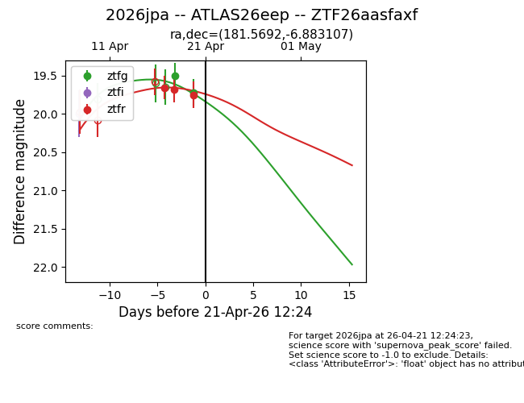
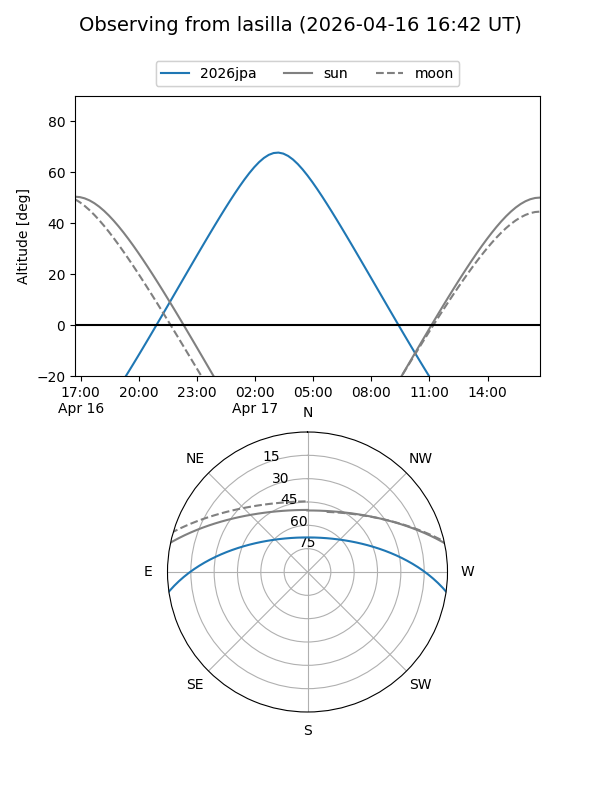
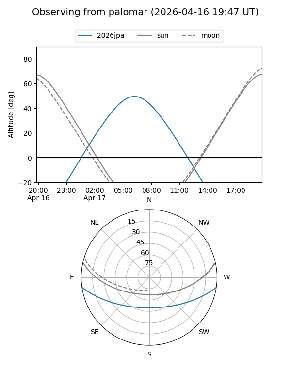
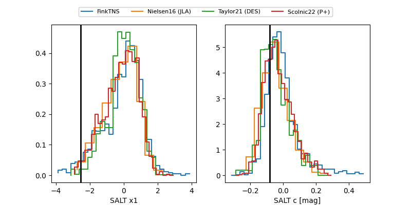

2026jpa
Target 2026jpa at 2026-04-21 12:28
Aliases and brokers:
FINK: link
Lasair: link
ALeRCE: link
TNS: link
YSE: link
alt names
ZTF26aasfaxf (ztf,fink_ztf)
2026jpa (tns,yse)
ATLAS26eep (atlas)
Coordinates:
equatorial (ra, dec) = 181.5692,-6.88311
equatorial (HMS+DMS) = 12:06:16.60,-06:52:59.18
galactic (l, b) = (283.4881,+54.27488)
Flags:
Photometry:
last ztfg=19.72, ztfr=19.75
2 ztfg, 3 ztfr detections
Lightcurve

Visibility


Additional plots
